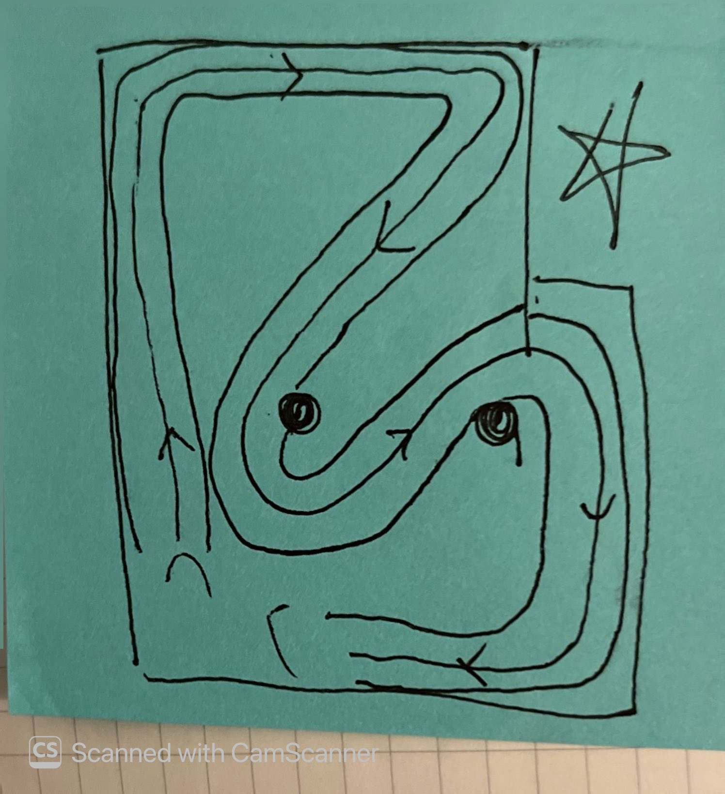
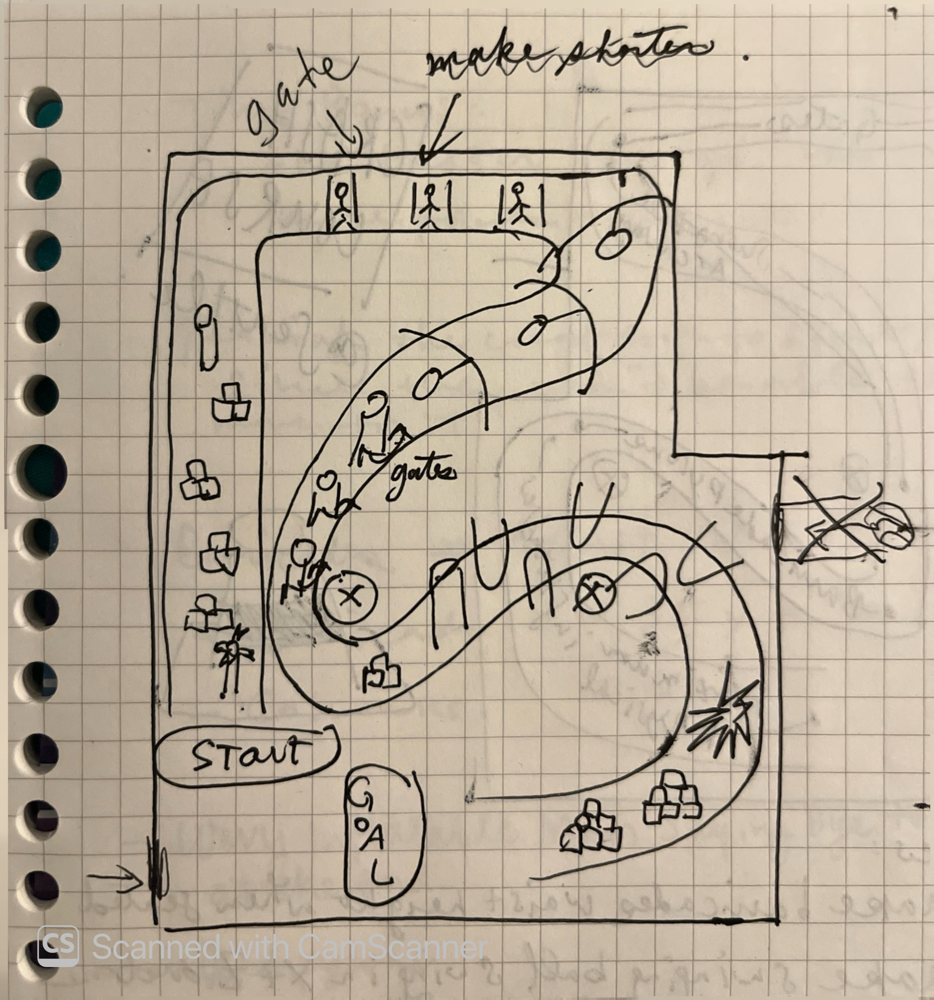
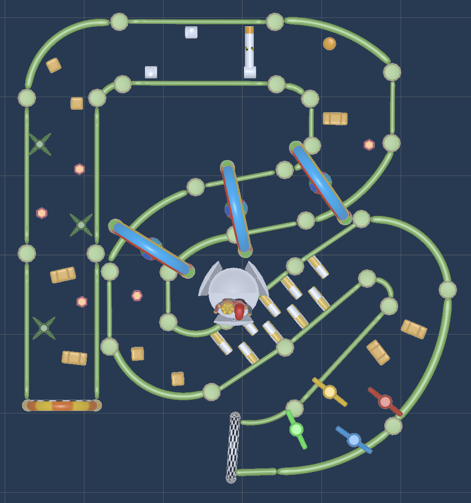
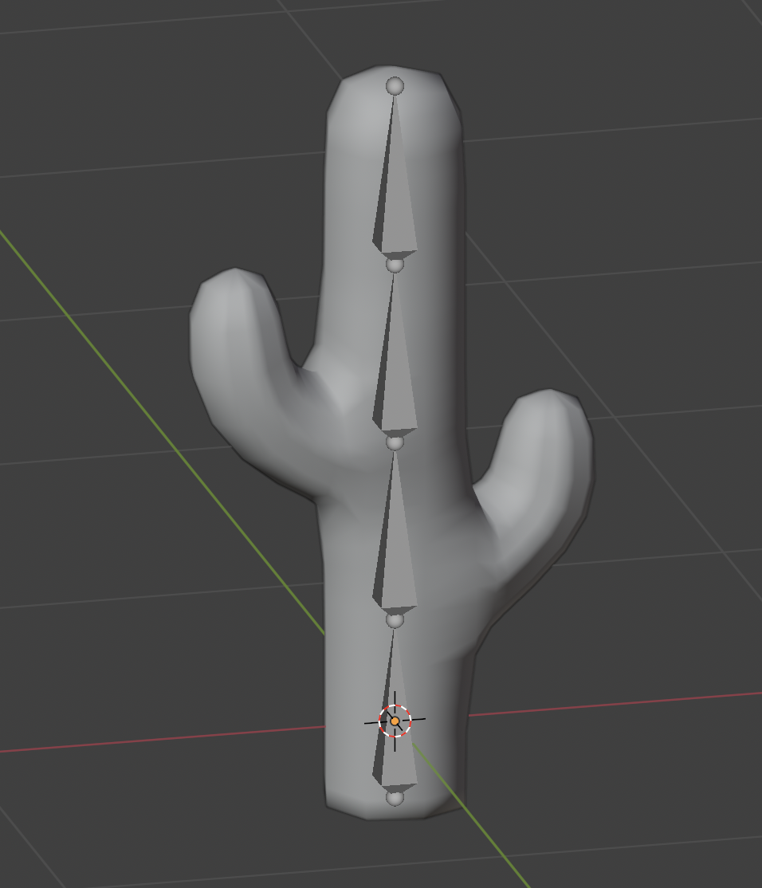

Selected work / mixed reality game
Crash Course
Real karts, mixed reality obstacles, and a course that rewards crashing into things.
Crash Course combines physical inflatables with digital gameplay. Players drive a real kart through a mixed reality obstacle course while wearing a headset.
Crashing into obstacles earns points and sends props flying. I built the bouncy physics that gives those impacts their wobble—and a reusable setup that later spread across Dream Park’s games.
Debuted at Dream Park’s inaugural location at West Canal Yards, Seattle · June 2025
01 / Course design
Turning an empty room into a winding raceway
With just one day on-site before the Seattle launch, we had to design the course remotely—making the most of the room while working around its fixed pillars.
Sketching and testing routes
I invited Kevin, Dream Park’s cofounder leading the Seattle setup, to brainstorm routes with me. We spent one minute per Post-it sketch in a Crazy 8s-style exercise.
We tested each route in the venue’s 3D scan to check turns and pillar clearance before choosing a layout.


Note: Black circles mark the room’s pillars
A slow start, then a little chaos
Settle in
A long straight with static inflatable pylons lets players settle into driving through Quest 3’s passthrough view.
Make the first turn
A wide 90-degree right turn eases players into the sharper, winding section.
Build the excitement
Swinging-ball arches raise the stakes as the path winds around two pillars and into two rapid turns.
Finish with a welcome
Inflatable tube men greet players on the final stretch to the goal.
From sketch to final course




02 / Inflatable physics
Making props feel inflatable
A simple and Unity’s configurable joints make props bend and bounce. The exaggerated wobble was surprisingly addictive, so we reused it across Dream Park’s games.

A simple spine rig lets the prop bend along its length.
03 / In-world race feedback
Keeping track of the race
A central jumbotron displays the round timer and score, bringing the race’s status into the course itself.
Featured coverage
Dream Park’s Seattle experience on ParentMap ↗Crash Course featured by Pao Seattle ↗